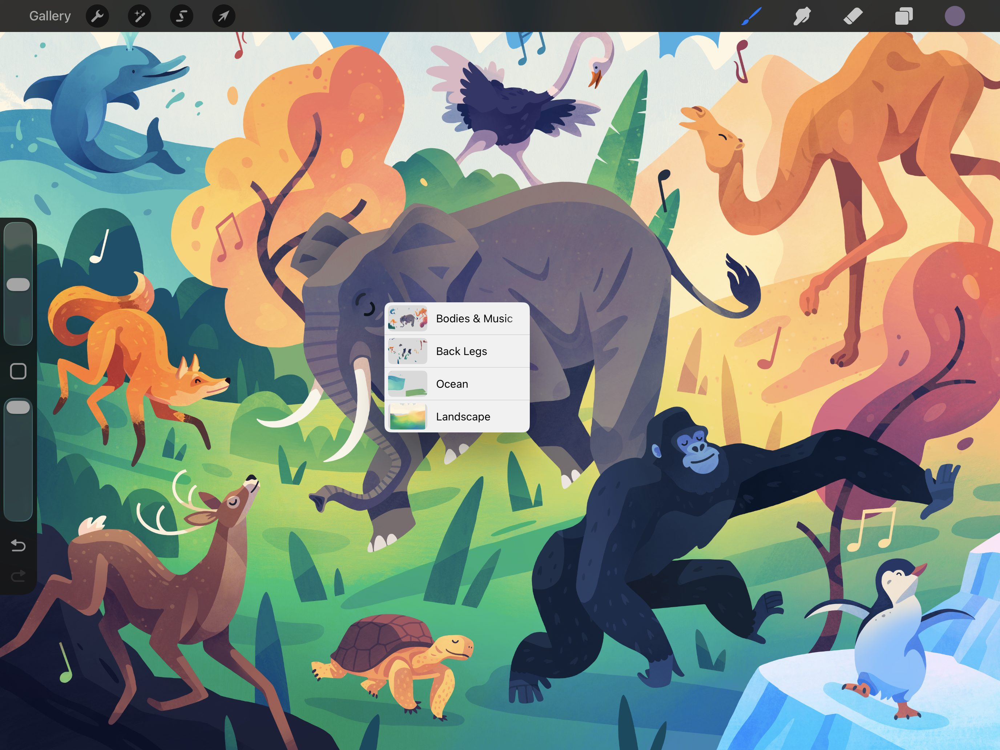
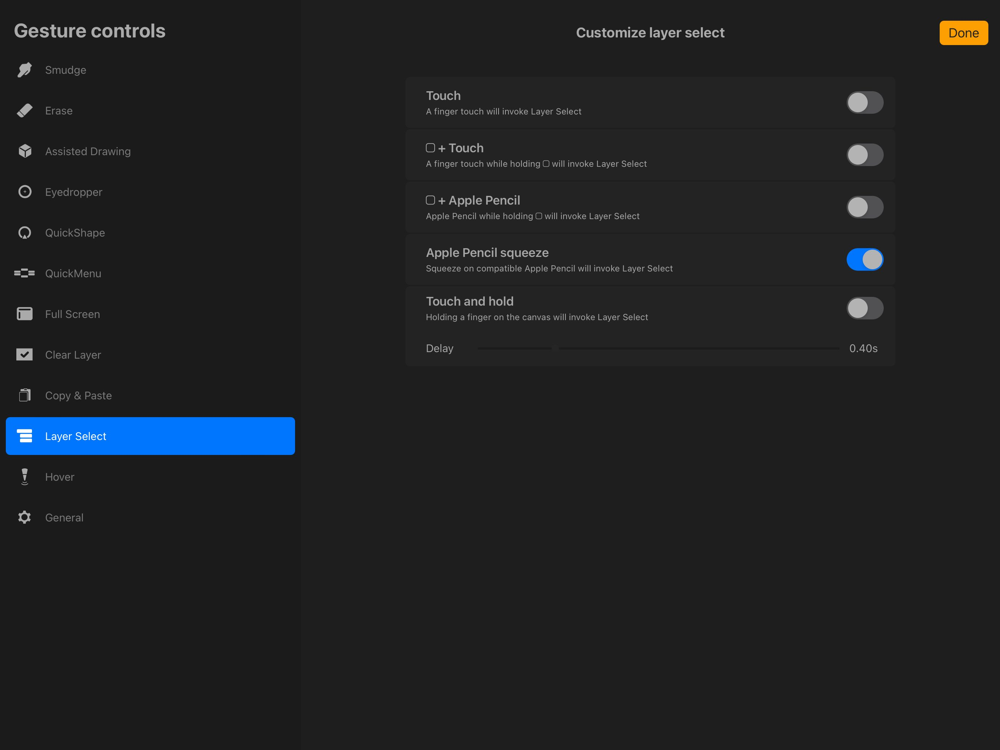
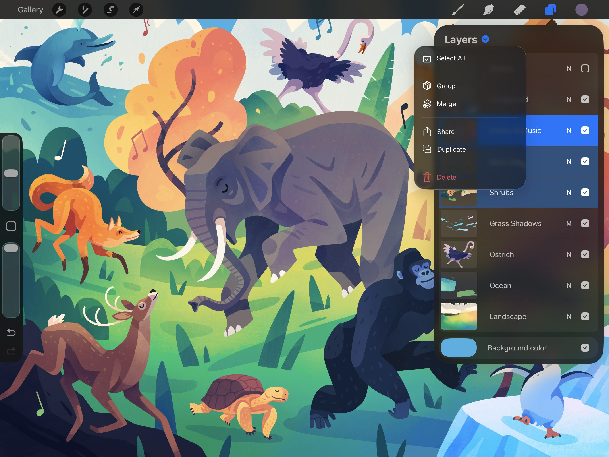
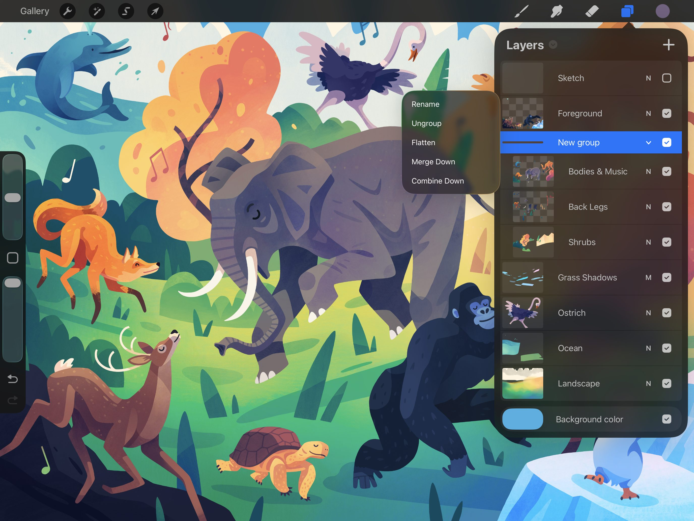
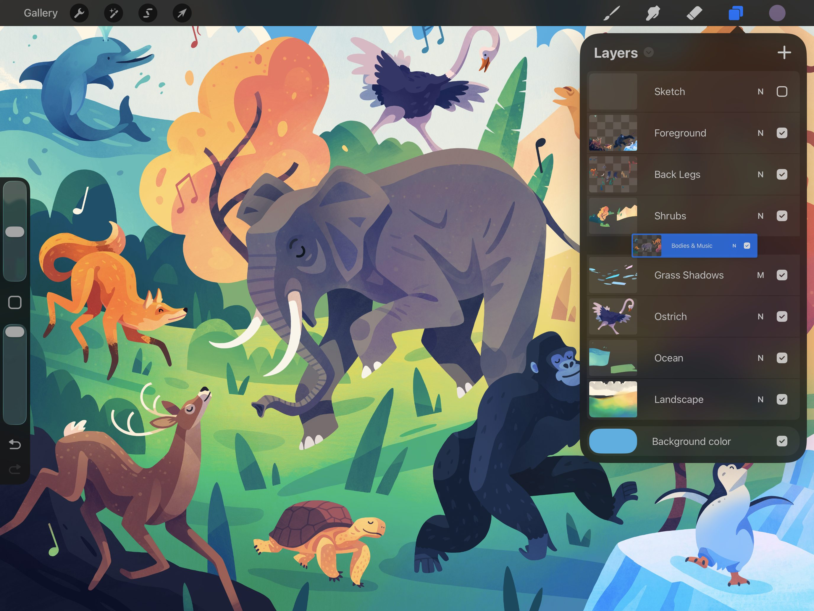
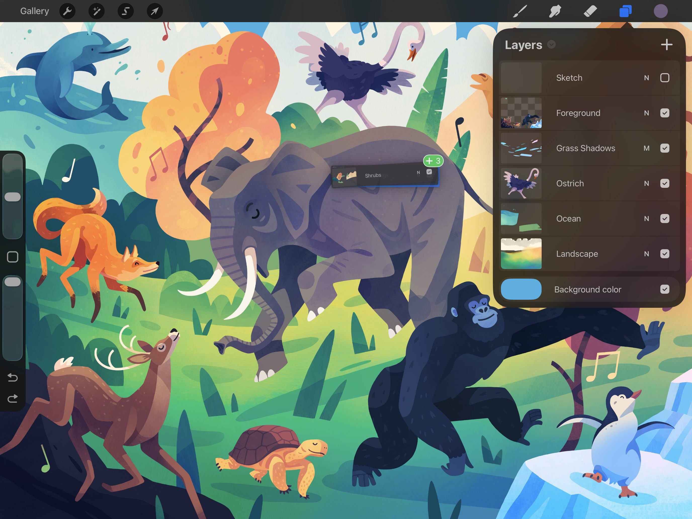

📖 Đã dịch sang tiếng Việt. Thuật ngữ chuyên môn giữ tiếng Anh — rê chuột để xem nghĩa (tooltip).
Organize
Di chuyển, khóa (Lock), nhân bản (Duplicate) và xóa (Delete) các lớp. Một cú chạm hoặc vuốt sẽ đưa toàn bộ các điều khiển lớp thường dùng ngay vào tầm tay bạn.
Select Layers (Chọn lớp)
Điều khiển và chỉnh sửa nhiều lớp cùng lúc, thực hiện di chuyển, nhóm, xóa hoặc biến đổi hàng loạt. Procreate cung cấp lựa chọn lớp theo kiểu Primary và Secondary để giúp bạn kiểm soát tinh tế hơn.
Primary Layer (Lớp chính)
Trong bảng Layers, chạm vào bất kỳ lớp nào để biến nó thành lớp Primary (đang hoạt động).
Lớp Primary sẽ hiện màu xanh sáng trong bảng Layers. Bạn chỉ có thể có một lớp Primary tại một thời điểm.
Mọi thao tác vẽ hay tô màu mà bạn thực hiện đều ảnh hưởng đến lớp Primary này.
Pro Tip
Make sure you have the correct layer selected before you begin drawing or painting.
Secondary Layers (Lớp phụ)
Vuốt sang phải trên bất kỳ lớp nào để thêm nó vào vùng chọn như một lớp Secondary.
Các lớp Secondary sẽ hiện màu xanh đậm trong bảng Layers. Trong khi bạn chỉ có thể có một lớp Primary tại một thời điểm, bạn có thể chọn bao nhiêu lớp Secondary tùy thích.
Các nét vẽ và tô màu sẽ chỉ xuất hiện trên lớp Primary.
Using Selected Layers (Sử dụng các lớp đã chọn)
Mọi thao tác Selection (vùng chọn) hoặc Transformation (biến đổi) sẽ ảnh hưởng đến tất cả các lớp đã chọn.
It's important to note that you can't make Adjustments with multiple layers selected.
Các thao tác Cut và Copy chỉ áp dụng cho lớp Primary của bạn.
Pro Tip
When you select a Secondary layer, two new options appear on the top right of the Layers panel: Delete and Group. These options affect all currently selected layers.
Selecting Layers vs Selecting Contents (Chọn lớp so với Chọn nội dung)
Procreate cho phép bạn chọn toàn bộ một lớp (như mô tả ở trên) hoặc chọn toàn bộ pixel trên một lớp thông qua Layer Options Menu.
You can also select parts of a layer's contents using Selection Tools.
Khám phá chi tiết hơn về các cách tiếp cận khác nhau này trong phần Selections.
Layer Select (Chọn lớp)
Dùng phím tắt này để chọn một lớp cụ thể bằng cách chạm vào nội dung trên khung vẽ mà không cần dùng Layers menu.


Layer Select dùng thao tác chạm để hiển thị tất cả các lớp liên quan đến một vùng cụ thể trên khung vẽ.
Khi Layer Select đang bật, nội dung riêng của từng lớp sẽ được tô sáng khi bạn di chuyển ngón tay hoặc Pencil quanh khung vẽ. Nhấc ngón tay hoặc Pencil lên để chọn một lớp đang được tô sáng. Thanh trên cùng sẽ cho biết bạn đã chọn lớp cụ thể đó.
Nếu có nhiều hơn một lớp chồng lên nhau ở vùng đó, một bảng pop-up sẽ xuất hiện, cho biết tất cả các lớp sẵn có để bạn chọn. Chạm vào lớp bạn muốn chọn để tiếp tục làm việc trên lớp đó.
Phím tắt hữu ích này giúp bạn không phải liên tục mở bảng Layers.
Để bật Layer Select, hãy vào Actions > Prefs > Gesture Controls > Layer Select. Tại đây bạn có thể thiết lập các phím tắt cho thao tác chạm và Apple Pencil để đưa Layer Select vào quy trình làm việc của mình.

Để tìm hiểu thêm về Layer Select và các điều khiển cử chỉ lớp khác, hãy xem Layer Gestures trong phần Gestures của chương Interface and Gestures trong sổ tay này.
Layer Select với Apple Pencil Pro
Người dùng Apple Pencil Pro có thể gán Layer Select cho chức năng squeeze (bóp) trong Gesture controls. Đây là một cách tiện lợi để chọn các lớp của tác phẩm mà không cần chạm vào màn hình. Phản hồi xúc giác (haptic) sẽ cho biết khi thao tác squeeze đã được kích hoạt thành công.
Heads Up
Squeeze can only be assigned to one gesture at a time. Assigning squeeze to layer select will deactivate any other gesture you have squeeze assigned to.
Group Layers (Nhóm các lớp)
Kết hợp nhiều lớp thành các Group (nhóm) để giữ cho tác phẩm ngăn nắp và có tổ chức.

Create
Khi bạn chọn nhiều lớp, dấu mũ tên của Layers Menu sẽ chuyển sang màu xanh.
Chạm vào nó để mở Layers Menu, sau đó chạm Group.
View
Dùng mũi tên ở bên phải Group để mở rộng hoặc thu gọn nhóm bất cứ lúc nào.
Select
Giống như lớp, bạn có thể chọn một Group dạng lựa chọn Primary hoặc Secondary.
Vuốt sang phải để chọn một Group Secondary. Nó sẽ hoạt động giống như khi bạn đã chọn mọi lớp trong Group đó.
Chạm để chọn một Group Primary. Việc này cho phép bạn dùng mọi thao tác Selection và Transform. Các thao tác được áp dụng cho tất cả các lớp trong Group cùng lúc, ngoại trừ vẽ, smudge (nhòe), tẩy hoặc dùng Adjustments.
Pro Tip
If you Paint, Smudge or Erase with a group selected in the Layers Panel, Layer Select will appear. Select a layer contained within that group to continue working.
Ungroup

Để bỏ nhóm, hãy mở Layers Panel và chạm vào tên nhóm. Sau đó chạm Ungroup trong menu pop-up. Nếu nhóm nằm trong một hệ thống nhóm lồng nhau, các lớp đã bỏ nhóm sẽ chuyển lên nhóm cấp trên.
Move
Kéo - thả các lớp, các vùng chọn lớp và các nhóm để sắp xếp lại các thành tố trong một tác phẩm.

Move Layers and Layer Groups (Di chuyển lớp và nhóm lớp)
Nhấn và giữ một lớp hoặc Layer Group để nhặt nó lên. Giờ bạn có thể kéo lên hoặc xuống trong thứ tự các lớp. Nhả tay để xác định thứ tự mới.
Move Primary and Secondary Layers (Di chuyển các lớp Primary và Secondary)
Nếu bạn đã chọn các lớp Secondary (xem bên dưới), việc di chuyển lớp Primary sẽ kéo theo tất cả các lớp Secondary.
Move Layers Between Canvases (Di chuyển lớp giữa các khung vẽ)
Kéo - thả các lớp từ khung vẽ này sang khung vẽ khác, hoặc thả chúng vào Gallery để tạo các khung vẽ mới.


Chạm và giữ để nhặt một lớp lên, sau đó chạm các lớp khác để nhặt thêm chúng. Chạm vào nút Gallery bằng một ngón tay khác.
Drop Layers to Create New Canvas (Thả lớp để tạo khung vẽ mới)
Việc thả các lớp vào Gallery sẽ tạo một khung vẽ mới cho mỗi lớp bạn đang cầm.
Kích thước của khung vẽ sẽ giống với kích thước khung vẽ gốc.
Drop Layers to Add to Existing Canvas (Thả lớp để thêm vào khung vẽ đã có)
Trong khi đang cầm các lớp ở Gallery, hãy chạm vào khung vẽ đích bằng một ngón tay khác. Khi khung vẽ đã tải xong, mở bảng Layers và thả các lớp vào bảng.
Các lớp được nhập theo cách này sẽ được truyền đi dưới dạng ảnh, và sẽ không giữ lại Blend Modes, Masks hay các dữ liệu đặc thù khác của lớp.
Pro Tip
You can also Share layers using this method.
Lock, Duplicate, and Delete Layers (Khóa, Nhân bản và Xóa các lớp)
Bảo vệ một lớp đã hoàn thành khỏi các chỉnh sửa vô tình bằng Lock. Tạo bản sao của một lớp sẵn có bằng Duplicate. Loại bỏ các lớp không mong muốn bằng Delete.

Vuốt từ phải sang trái trên bất kỳ lớp hoặc Layer Group nào để hiện các nút cho ba tùy chọn thường dùng này.
Lock
Chức năng này ngăn việc chỉnh sửa vô tình một lớp mà bạn muốn giữ nguyên.
Khi bạn khóa một lớp, một biểu tượng ổ khóa nhỏ sẽ xuất hiện cạnh tên lớp. Để mở khóa một lớp để chỉnh sửa, hãy vuốt từ phải sang trái và chạm Unlock.
Duplicate (Nhân đôi)
Khi bạn Duplicate một lớp hoặc Layer Group, toàn bộ Masks, Blend Modes và tác phẩm sẽ được tái tạo từ bản gốc.
Nhân bản một lớp là cách tuyệt vời để thử nghiệm những thay đổi lớn mà không ảnh hưởng đến bản gốc.
Heads Up
Procreate artworks have a maximum number of layers that vary depending on your canvas size. If you reach the maximum, Merge layers to make room for new duplicates.
Delete
Việc xóa một lớp sẽ loại bỏ lớp đó khỏi tác phẩm.
Bạn có thể Undo thao tác này. Nhưng khi đã hết lượt undo, hoặc nếu bạn rời khỏi hoặc đưa ứng dụng sang nền, bạn sẽ không thể khôi phục lớp hoặc Group nữa.
Heads Up
You should generally think of deletion as permanent. Use with caution.
Still have questions?
If you didn't find what you're looking for, explore our video resources on YouTube or contact us directly. We’re always happy to help.